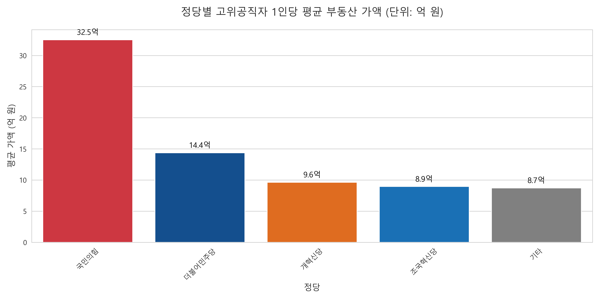
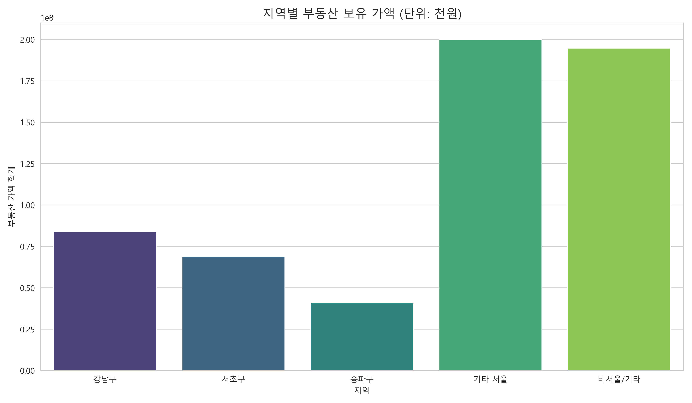
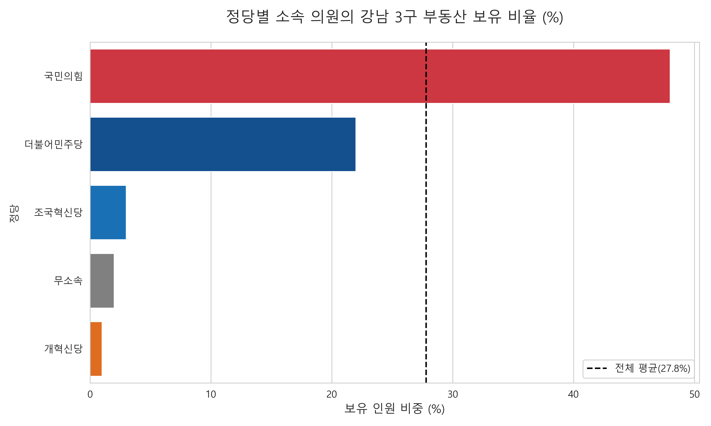
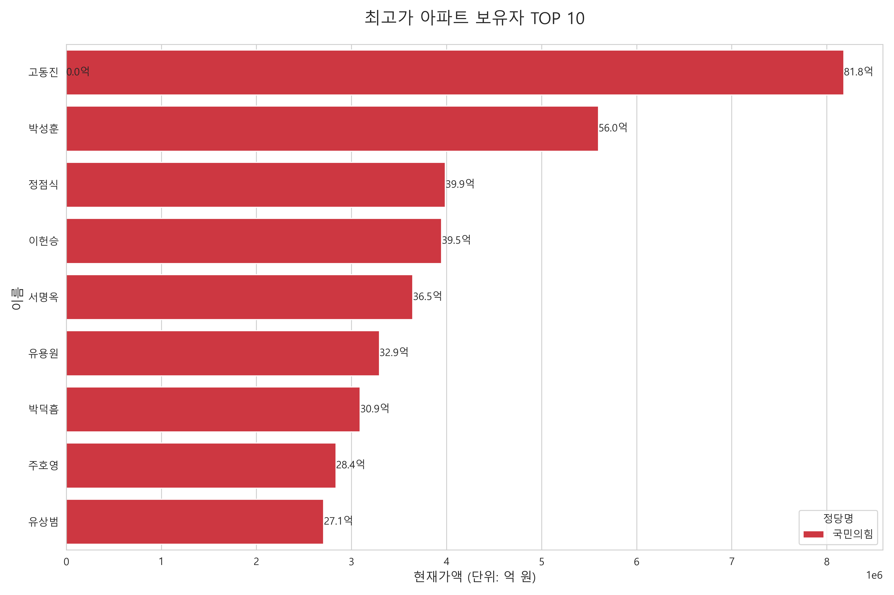
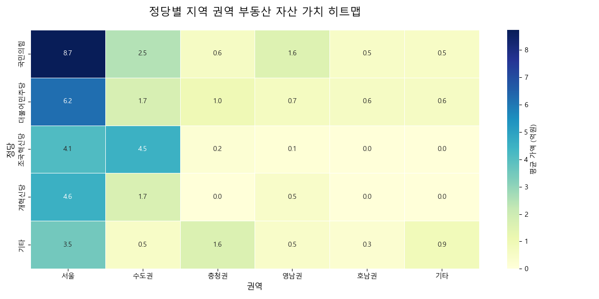

서민들에게 내 집 마련이 평생의 꿈인 반면, 2026년 공개된 국회의원들의 부동사 보유 현황은 일반 대중의 체감 잣대와는 확연한 차이를 보입니다. 주목해야 할 것은 그들이 보유한 부동산의 높은 현재 가액입니다.
아래 차트는 정당별 국회의원 1인이 보유한 평균 부동산 가액을 보여줍니다. 이는 대한민국 가계 평균 부동산 자산(약 4억 원)을 가볍게 뛰어넘는 수치로, 입법 기관 구성원들의 자산 구조가 최상위층에 형성되어 있음을 시사합니다.
서민들에게 내 집 마련이 평생의 꿈인 반면, 2026년 공개된 국회의원들의 부동사 보유 현황은 일반 대중의 체감 잣대와는 확연한 차이를 보입니다. 주목해야 할 것은 그들이 보유한 부동산의 높은 현재 가액입니다.
아래 차트는 정당별 국회의원 1인이 보유한 평균 부동산 가액을 보여줍니다. 이는 대한민국 가계 평균 부동산 자산(약 4억 원)을 가볍게 뛰어넘는 수치로, 입법 기관 구성원들의 자산 구조가 최상위층에 형성되어 있음을 시사합니다.

그렇다면 이토록 높은 자산 가치는 어디에서 기인할까요? 핵심 이유는 '강남 3구(강남·서초·송파)'입니다. 부동산 정책을 입안하고 규제를 논의하는 국회의원들의 강남 부동산 보유 비중은 두드러집니다.

전체 국회의원 중 강남 3구에 부동산을 보유한 비율을 정당별로 살펴보면, 특정 지역에 자산이 집중되는 '부의 쏠림 현상'을 명확히 확인할 수 있습니다.


마지막으로, 국회의원들이 보유한 부동산이 전국의 어느 권역에, 어느 정도의 가치로 분포되어 있는지 '권역별 자산 가치 히트맵'을 통해 분석했습니다.
색상이 짙을수록 해당 권역에 고가의 부동산이 집중되어 있음을 의미합니다. 국민의힘은 서울 고가 자산에 압도적인 색채를 띠고 있으며, 더불어민주당 역시 서울에 자산이 집중되어 있으나 상대적으로 옅은 분포를 보입니다. 조국혁신당 경우 수도권에 짙은 색을 띠고 있는 게 특징입니다. 이는 각 정당의 주요 지지 기반이나 소속 의원의 출신 지역보다도 '서울 중심의 부동산 가치 상승 추세'를 따를 유인과 위험을 보여줍니다.
